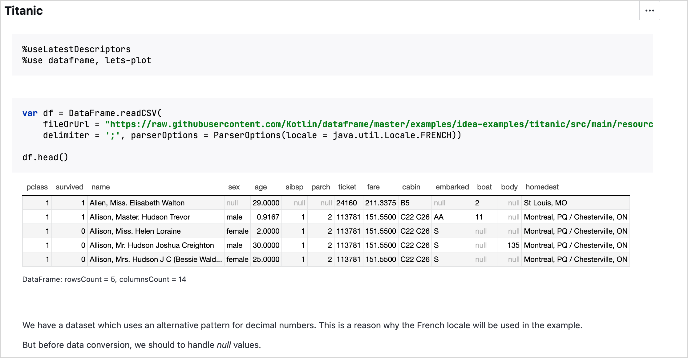

To share a Kotlin Notebook, you can just upload it to any notebook web viewer because Kotlin notebooks follow the universal Jupyter format.
We recommend the following platforms to share Kotlin notebooks:
JetBrains Datalore: This platform not only facilitates the sharing of Kotlin notebooks but also improves their usability. Datalore allows you to execute and edit notebooks, and incorporates advanced features, such as creating interactive reports and scheduling notebook runs. To see it in action, see Kotlin Datalore example using DataFrame. 